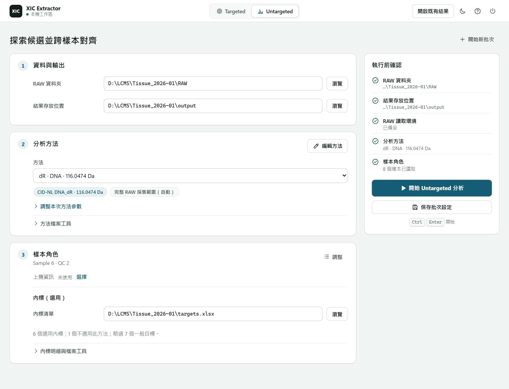

XIC Extractor · 探索特徵
從方法探索，
走到可比較的 Matrix
依方法找候選、對齊樣本，再讀懂格值與缺格。需要時檢閱曲線、整理矩陣，最後把結果交給下游；對齊的 feature 不自動等於已鑑定化合物。
01 · 執行
新批次從 RAW 資料夾開始

首次使用先依啟動與 reader 設定完成準備，再選擇分析。
- 選擇 Untargeted，執行完整分析。
- 指定 RAW 與輸出資料夾，確認共用 reader 設定。
- 匯入並核對上機資訊、樣本配對與注射順序；確認內標清單是否適用於所選方法。
- 選 CID-NL 起始方法，用 編輯方法…確認 tags 與組合，再套用。
- 開始執行；完成後從結果開 Matrix 與檢閱介面。
02 · 分析範圍
工作區執行完整分析
選擇 RAW 資料夾後，工作區會執行 Discovery、跨樣本 Alignment 與 Backfill。它不是只產生候選清單的模式選擇器；候選表本身也不是完成的 feature matrix。
03 · 輸入
方法、樣本順序與內標各回答不同問題
方法決定搜尋什麼證據；上機資訊支援樣本配對與注射順序，字母順序不是注射順序。內標清單與 Targeted 共用格式，但 Untargeted 只使用適用的 role=istd 列，不套用 Targeted 方法設定。
例如 dR 方法不把 R 內標當成適用標準。不適用不等於 ND；更換方法後應重新核對。清空內標欄位可不提供清單，與提供一份沒有可用內標列的檔案是不同操作。完整輸入規則查 Inputs。
04 · 結果
先分清楚候選與完成的 Matrix
alignment_matrix.tsv 的列是 feature、欄是 sample、格內是發布的 area；它不是候選清單，也不是已完成 normalization 的結果。
discovery_peaks.csv 回答單樣本找到哪些 MS1 峰、哪些准入 Alignment；discovery_events.csv 回答每個 NL 事件定位到哪個峰、為何沒有附著；alignment_review.tsv 與完成的 evidence report 支持群組／格值判讀。詳細檔案與條件查 輸出指南，欄位查 輸出參考。
05 · 檢閱與使用
讀懂缺格，再準備下游矩陣
- 核對 Matrix 樣本與本批資料，找到有疑問的 feature。
- 在工作台選 feature 與 sample，查看保存的判斷與可用 XIC。零是數值；空白不等於零或化合物不存在。
- 需要理解回填時，先看 為什麼 Backfill 不是插值。有面積與計入偵測也不是同一件事。
- 按需要選 整理矩陣，在 矩陣整理確認來源與樣本、啟用步驟與必要門檻。未具備輸入的步驟會標示無法執行。
- 讀摘要與
feature_decisions.tsv，確認保留／移除原因，再使用保留的矩陣。新結果寫到獨立資料夾，不覆寫原始 Matrix。
有效值比例是 availability，不是 detection rate：零與有限的回填值可算有效，空白不算；樣本角色決定分母。
逐步讀取與使用指南 →。Normalization、校正與統計仍是分開的下游工作。
06 · 遇到問題
先確認輸入與完成狀態
按鈕無法執行時先檢查缺少的輸入；DLL 錯誤依 RawFileReader 設定處理，不依 Xcalibur 舊 DLL 配對。檢閱不可用時查完成證據與畫面上的原因，不把部分輸出當作已完成結果。